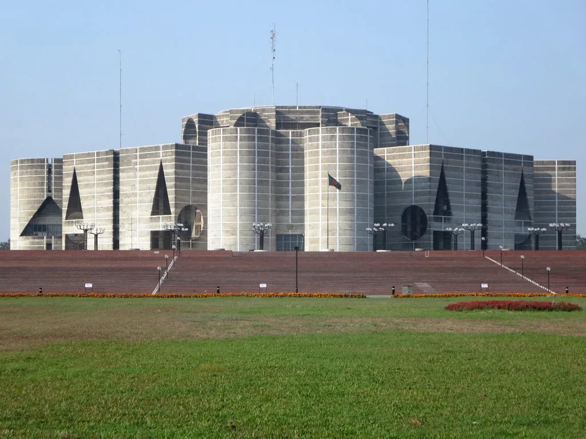

정쟁으로 얼룩졌던 국정감사가 끝나자마자 국회는 예산 정국으로 넘어갔다. 이재명 대통령은 지난 2일 국회 본회의장에서 내년도 예산안에 대한 시정연설을 직접 했고, 국회 예산결산특별위원회는 9일 전체회의를 열어 본격적인 예산안 심사에 착수했다. 예결위는 이날부터 10일까지 경제부처별 심사를 진행한 뒤 11일과 12일 이틀간 비경제부처 심사를 이어갈 계획이며, 예산안의 법정 처리 시한은 12월 2일이다.
이재명 정부가 편성한 두 번째 예산안은 총지출 규모가 820조9000억원에 달해 올해보다 12.8% 늘어난 역대 최대 수준이다. 역대급 지출 규모만큼 여야의 신경전도 예년보다 치열해질 수밖에 없다는 전망이 나온다.

이번 예산안의 최대 쟁점은 162조원 규모로 조성되는 '미래대응기금'이다. 정부는 최근 이어진 반도체 업종 호황에 따라 예상보다 많이 걷힌 추가 세수를 활용해 이 기금을 만들겠다는 구상이다. 구체적으로는 내년도 사업비로 약 45조4000억원을 투입하고, 국채 신규 발행을 줄이는 방식으로 12조5000억원을 확보하며, 나머지 약 104조원은 여유자금 형태로 운용하는 방안이 거론되고 있다.
그러나 국회 예산정책처는 "2029년 이후에는 미래대응기금의 재원으로 활용할 추가 세수가 발생하지 않을 것"이라는 전망을 내놓으며 재원의 지속 가능성에 의문을 제기했다. 반도체 경기가 꺾이거나 세수 호조가 일시적인 현상으로 끝날 경우, 기금을 둘러싼 운용 계획 자체가 흔들릴 수 있다는 지적이다.

더불어민주당은 미래 성장동력을 뒷받침하고 민생을 지원하기 위해서는 재정 지출 확대가 불가피하다는 입장을 고수하고 있다. 반도체·인공지능 등 차세대 산업에 선제적으로 투자해야 지금의 호황을 장기적인 성장으로 이어갈 수 있고, 세수가 부족해질 경우에는 추후 보완이 가능하다는 점도 강조하며 기금 신설의 필요성을 적극 설득하고 있다.
반면 국민의힘은 일시적인 세수 증가에 기댄 확장 재정이 결국 국가채무 부담을 키울 수 있다고 반박하며 대규모 삭감을 요구하고 있다. 특히 미래대응기금에 배정된 예산은 신규 기금 조성보다 기존 국가채무 상환에 우선 투입해야 한다는 주장을 펴고 있어, 심사 과정에서 여야 간 충돌이 불가피할 전망이다.
역대 최대 규모의 예산안을 놓고 여야가 팽팽하게 맞서는 가운데, 법정 시한인 12월 2일까지 예산안이 제때 처리될 수 있을지에 대한 우려도 커지고 있다. 예산안 심사가 법정 시한을 넘겨 연말로 넘어가는 일이 거듭됐던 과거 사례를 돌이켜보면, 올해도 여야가 세부 쟁점마다 충돌하며 심사 일정이 지연될 가능성을 배제하기 어렵다는 관측이 나온다. 매년 반복되는 예산 정국이 올해도 예외 없이 미래대응기금을 둘러싼 공방으로 이어지면서, 국민 생활과 직결된 각종 사업 예산 확정이 늦어질 가능성도 제기된다. 특히 반도체·인공지능 분야 지원 예산과 서민 민생 대책이 이번 기금과 맞물려 있는 만큼, 심사 결과에 따라 내년 산업 투자와 복지 정책의 속도가 좌우될 것으로 보인다. 여야가 접점을 찾지 못한 채 심사가 장기화할 경우, 그 여파는 결국 예산 집행 시점이 늦어지는 형태로 국민들에게 돌아올 수밖에 없다.